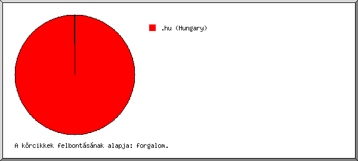
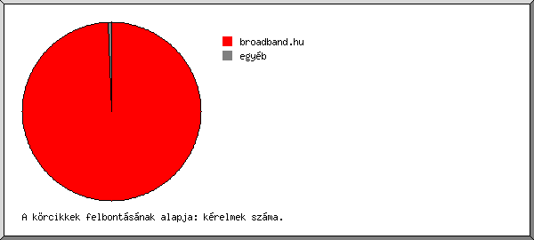
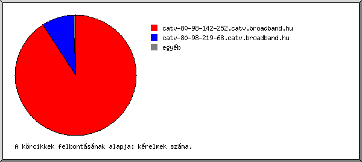
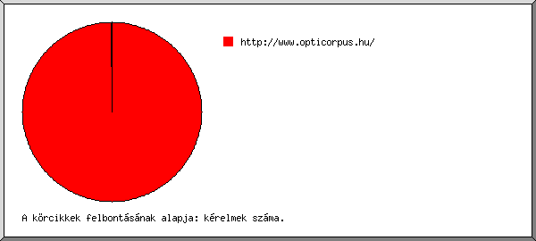
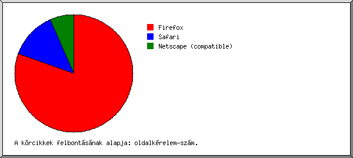
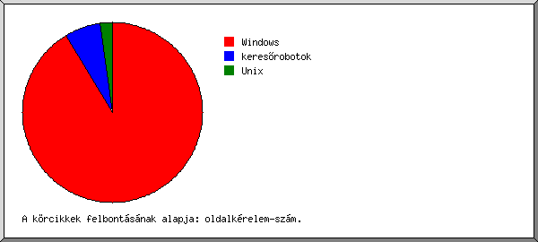
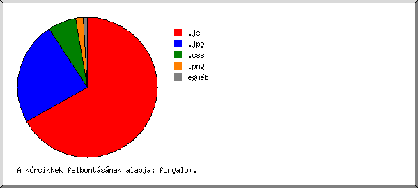
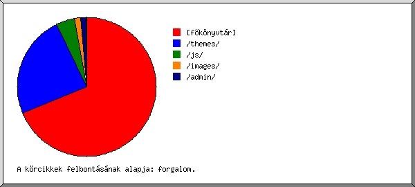
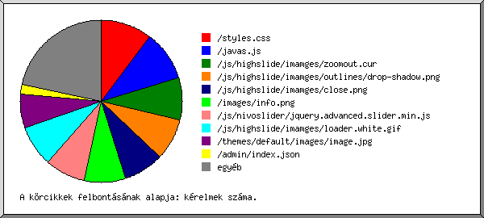

Web Szerver Statisztika: [www.opticorpus.hu]
Web Szerver Statisztika: [www.opticorpus.hu]
Futás kezdete pén, 2015. okt. 16. 01:40.
Kérelmek analizálva: hét, 2015. okt. 12. 18:00 - pén, 2015. okt. 16. 01:39 (3,32 nap).
Web Szerver Statisztika: [www.opticorpus.hu]Futás kezdete pén, 2015. okt. 16. 01:40.
Kérelmek analizálva: hét, 2015. okt. 12. 18:00 - pén, 2015. okt. 16. 01:39 (3,32 nap).
(Ugrás: Oldal teteje | Általános összesítés | Éves Jelentés | Havi jelentés | Heti jelentés | Napi jelentés | Napi összesítés | Óránkénti összesítés | Domain szerinti jelentés | Szervezet szerinti jelentés | Host szerinti jelentés | Hivatkozó site-ok jelentése | Böngészõk szerinti összesítés | A böngészõ operációs rendszere szerinti jelentés | Fájltípus szerinti jelentés | Könyvtár szerinti jelentés | Kérelem szerinti jelentés)
Összes sikeres kérelem: 1.030
Átlagos sikeres napi kérelem: 310
Összes sikeres oldal kérelem: 46
Átlagos sikeres napi oldal kérelem: 13
Sikertelen kérelem: 259
Átirányított kérelem: 17
Különbözõ kért fájlok: 80
Különbözõ kiszolgált host-ok: 8
Átvitt adat: 19,09 megabyte
Átlagos napi adatátvitel: 5,75 megabyte
(Ugrás: Oldal teteje | Általános összesítés | Éves Jelentés | Havi jelentés | Heti jelentés | Napi jelentés | Napi összesítés | Óránkénti összesítés | Domain szerinti jelentés | Szervezet szerinti jelentés | Host szerinti jelentés | Hivatkozó site-ok jelentése | Böngészõk szerinti összesítés | A böngészõ operációs rendszere szerinti jelentés | Fájltípus szerinti jelentés | Könyvtár szerinti jelentés | Kérelem szerinti jelentés)
Minden egység ( ) 1 oldal kérelmet.
) 1 oldal kérelmet.
| év | kér. | oldal | |
|---|---|---|---|
| 2015 | 1030 | 46 |     |
Legaktívabb év: 2015 (46 oldal kérelmeit).
(Ugrás: Oldal teteje | Általános összesítés | Éves Jelentés | Havi jelentés | Heti jelentés | Napi jelentés | Napi összesítés | Óránkénti összesítés | Domain szerinti jelentés | Szervezet szerinti jelentés | Host szerinti jelentés | Hivatkozó site-ok jelentése | Böngészõk szerinti összesítés | A böngészõ operációs rendszere szerinti jelentés | Fájltípus szerinti jelentés | Könyvtár szerinti jelentés | Kérelem szerinti jelentés)
Minden egység () 2 oldal kérelmeit vagy egy részét jelképezi.
| hónap | kér. | oldal | |
|---|---|---|---|
| 2015. okt . | 1030 | 46 |  |
Legforgalmasabb hónap: 2015. okt. (46 oldal kérelmeit).
(Ugrás: Oldal teteje | Általános összesítés | Éves Jelentés | Havi jelentés | Heti jelentés | Napi jelentés | Napi összesítés | Óránkénti összesítés | Domain szerinti jelentés | Szervezet szerinti jelentés | Host szerinti jelentés | Hivatkozó site-ok jelentése | Böngészõk szerinti összesítés | A böngészõ operációs rendszere szerinti jelentés | Fájltípus szerinti jelentés | Könyvtár szerinti jelentés | Kérelem szerinti jelentés)
Minden egység () 2 oldal kérelmeit vagy egy részét jelképezi.
| hét eleje | kér. | oldal | |
|---|---|---|---|
| 15.okt .11 | 1030 | 46 | |
Legforgalmasabb hét: hét eleje 15.okt.11 (46 oldal kérelmeit).
(Ugrás: Oldal teteje | Általános összesítés | Éves Jelentés | Havi jelentés | Heti jelentés | Napi jelentés | Napi összesítés | Óránkénti összesítés | Domain szerinti jelentés | Szervezet szerinti jelentés | Host szerinti jelentés | Hivatkozó site-ok jelentése | Böngészõk szerinti összesítés | A böngészõ operációs rendszere szerinti jelentés | Fájltípus szerinti jelentés | Könyvtár szerinti jelentés | Kérelem szerinti jelentés)
Minden egység () 2 oldal kérelmeit vagy egy részét jelképezi.
| dátum | kér. | oldal | |
|---|---|---|---|
| 15.okt .12 | 4 | 2 | |
| 15.okt .13 | 7 | 3 | |
| 15.okt .14 | 1 | 1 | |
| 15.okt .15 | 945 | 40 | |
| 15.okt .16 | 73 | 0 |
Legforgalmasabb nap: 15.okt.15 (40 oldal kérelmeit).
(Ugrás: Oldal teteje | Általános összesítés | Éves Jelentés | Havi jelentés | Heti jelentés | Napi jelentés | Napi összesítés | Óránkénti összesítés | Domain szerinti jelentés | Szervezet szerinti jelentés | Host szerinti jelentés | Hivatkozó site-ok jelentése | Böngészõk szerinti összesítés | A böngészõ operációs rendszere szerinti jelentés | Fájltípus szerinti jelentés | Könyvtár szerinti jelentés | Kérelem szerinti jelentés)
Minden egység () 1 oldal kérelmet.
| nap | kér. | oldal | |
|---|---|---|---|
| vas | 0 | 0 | |
| hét | 4 | 2 | |
| kedd | 7 | 3 | |
| sze | 1 | 1 | |
| csüt | 945 | 40 | |
| pén | 73 | 0 | |
| szo | 0 | 0 |
(Ugrás: Oldal teteje | Általános összesítés | Éves Jelentés | Havi jelentés | Heti jelentés | Napi jelentés | Napi összesítés | Óránkénti összesítés | Domain szerinti jelentés | Szervezet szerinti jelentés | Host szerinti jelentés | Hivatkozó site-ok jelentése | Böngészõk szerinti összesítés | A böngészõ operációs rendszere szerinti jelentés | Fájltípus szerinti jelentés | Könyvtár szerinti jelentés | Kérelem szerinti jelentés)
Minden egység () 1 oldal kérelmet.
| ó. | kér. | oldal | |
|---|---|---|---|
| 0 | 10 | 0 | |
| 1 | 63 | 0 | |
| 2 | 0 | 0 | |
| 3 | 1 | 1 | |
| 4 | 0 | 0 | |
| 5 | 0 | 0 | |
| 6 | 0 | 0 | |
| 7 | 0 | 0 | |
| 8 | 0 | 0 | |
| 9 | 0 | 0 | |
| 10 | 0 | 0 | |
| 11 | 3 | 1 | |
| 12 | 195 | 13 | |
| 13 | 378 | 18 | |
| 14 | 36 | 0 | |
| 15 | 4 | 0 | |
| 16 | 0 | 0 | |
| 17 | 80 | 1 | |
| 18 | 252 | 8 | |
| 19 | 0 | 0 | |
| 20 | 0 | 0 | |
| 21 | 0 | 0 | |
| 22 | 4 | 1 | |
| 23 | 4 | 3 | |
(Ugrás: Oldal teteje | Általános összesítés | Éves Jelentés | Havi jelentés | Heti jelentés | Napi jelentés | Napi összesítés | Óránkénti összesítés | Domain szerinti jelentés | Szervezet szerinti jelentés | Host szerinti jelentés | Hivatkozó site-ok jelentése | Böngészõk szerinti összesítés | A böngészõ operációs rendszere szerinti jelentés | Fájltípus szerinti jelentés | Könyvtár szerinti jelentés | Kérelem szerinti jelentés)

domain listázása, rendezve: forgalom.
| kér. | %byte | domain |
|---|---|---|
| 1024 | 99,99% | .hu (Hungary) |
| 5 | 0,01% | .com (Commercial) |
| 1 | .net (Networks) |
(Ugrás: Oldal teteje | Általános összesítés | Éves Jelentés | Havi jelentés | Heti jelentés | Napi jelentés | Napi összesítés | Óránkénti összesítés | Domain szerinti jelentés | Szervezet szerinti jelentés | Host szerinti jelentés | Hivatkozó site-ok jelentése | Böngészõk szerinti összesítés | A böngészõ operációs rendszere szerinti jelentés | Fájltípus szerinti jelentés | Könyvtár szerinti jelentés | Kérelem szerinti jelentés)

szervezet listázása, rendezve: kérelmek száma.
| kér. | %byte | szervezet |
|---|---|---|
| 1024 | 99,99% | broadband.hu |
| 5 | 0,01% | amazonaws.com |
| 1 | torservers.net |
(Ugrás: Oldal teteje | Általános összesítés | Éves Jelentés | Havi jelentés | Heti jelentés | Napi jelentés | Napi összesítés | Óránkénti összesítés | Domain szerinti jelentés | Szervezet szerinti jelentés | Host szerinti jelentés | Hivatkozó site-ok jelentése | Böngészõk szerinti összesítés | A böngészõ operációs rendszere szerinti jelentés | Fájltípus szerinti jelentés | Könyvtár szerinti jelentés | Kérelem szerinti jelentés)

host listázása, betûrend szerint rendezve.
| kér. | %byte | host |
|---|---|---|
| 1 | ec2-52-17-147-123.eu-west-1.compute.amazonaws.com | |
| 1 | ec2-52-30-145-3.eu-west-1.compute.amazonaws.com | |
| 1 | ec2-52-30-46-202.eu-west-1.compute.amazonaws.com | |
| 1 | ec2-52-30-58-168.eu-west-1.compute.amazonaws.com | |
| 1 | ec2-52-30-87-190.eu-west-1.compute.amazonaws.com | |
| 936 | 85,87% | catv-80-98-142-252.catv.broadband.hu |
| 88 | 14,12% | catv-80-98-219-68.catv.broadband.hu |
| 1 | manning1.torservers.net |
(Ugrás: Oldal teteje | Általános összesítés | Éves Jelentés | Havi jelentés | Heti jelentés | Napi jelentés | Napi összesítés | Óránkénti összesítés | Domain szerinti jelentés | Szervezet szerinti jelentés | Host szerinti jelentés | Hivatkozó site-ok jelentése | Böngészõk szerinti összesítés | A böngészõ operációs rendszere szerinti jelentés | Fájltípus szerinti jelentés | Könyvtár szerinti jelentés | Kérelem szerinti jelentés)

hivatkozó site listázása, rendezve: kérelmek száma.
| kér. | site |
|---|---|
| 994 | http://www.opticorpus.hu/ |
| 1 | http://hvd-store.com/ |
(Ugrás: Oldal teteje | Általános összesítés | Éves Jelentés | Havi jelentés | Heti jelentés | Napi jelentés | Napi összesítés | Óránkénti összesítés | Domain szerinti jelentés | Szervezet szerinti jelentés | Host szerinti jelentés | Hivatkozó site-ok jelentése | Böngészõk szerinti összesítés | A böngészõ operációs rendszere szerinti jelentés | Fájltípus szerinti jelentés | Könyvtár szerinti jelentés | Kérelem szerinti jelentés)

böngészõ listázása legalább 1 oldal kérelmet, rendezve: oldalkérelem-szám.
| srsz. | kér. | oldal | böngészõ |
|---|---|---|---|
| 1 | 936 | 37 | Firefox |
| 936 | 37 | Firefox/41 | |
| 2 | 89 | 6 | Safari |
| 89 | 6 | Safari/537 | |
| 3 | 5 | 3 | Netscape (compatible) |
(Ugrás: Oldal teteje | Általános összesítés | Éves Jelentés | Havi jelentés | Heti jelentés | Napi jelentés | Napi összesítés | Óránkénti összesítés | Domain szerinti jelentés | Szervezet szerinti jelentés | Host szerinti jelentés | Hivatkozó site-ok jelentése | Böngészõk szerinti összesítés | A böngészõ operációs rendszere szerinti jelentés | Fájltípus szerinti jelentés | Könyvtár szerinti jelentés | Kérelem szerinti jelentés)

op.rsz. listázása, rendezve: oldalkérelem-szám.
| srsz. | kér. | oldal | op.rsz. |
|---|---|---|---|
| 1 | 1024 | 42 | Windows |
| 936 | 37 | Windows NT | |
| 88 | 5 | ismeretlen verziójú Windows | |
| 2 | 5 | 3 | keresõrobotok |
| 3 | 1 | 1 | Unix |
| 1 | 1 | Linux |
(Ugrás: Oldal teteje | Általános összesítés | Éves Jelentés | Havi jelentés | Heti jelentés | Napi jelentés | Napi összesítés | Óránkénti összesítés | Domain szerinti jelentés | Szervezet szerinti jelentés | Host szerinti jelentés | Hivatkozó site-ok jelentése | Böngészõk szerinti összesítés | A böngészõ operációs rendszere szerinti jelentés | Fájltípus szerinti jelentés | Könyvtár szerinti jelentés | Kérelem szerinti jelentés)

kiterjesztés listázása legalább 0,1% forgalommal, rendezve: forgalom.
| kér. | %byte | kiterjesztés |
|---|---|---|
| 248 | 66,76% | .js |
| 81 | 24,10% | .jpg |
| 131 | 6,50% | .css |
| 284 | 1,71% | .png |
| 45 | 0,50% | .json |
| 96 | 0,22% | .gif |
| 21 | 0,10% | [könyvtárak] |
| 124 | 0,11% | [nincs felsorolva: 6 kiterjesztés] |
(Ugrás: Oldal teteje | Általános összesítés | Éves Jelentés | Havi jelentés | Heti jelentés | Napi jelentés | Napi összesítés | Óránkénti összesítés | Domain szerinti jelentés | Szervezet szerinti jelentés | Host szerinti jelentés | Hivatkozó site-ok jelentése | Böngészõk szerinti összesítés | A böngészõ operációs rendszere szerinti jelentés | Fájltípus szerinti jelentés | Könyvtár szerinti jelentés | Kérelem szerinti jelentés)

könyvtar listázása legalább 0,01% forgalommal, rendezve: forgalom.
| kér. | %byte | könyvtár |
|---|---|---|
| 249 | 68,78% | [fõkönyvtár] |
| 83 | 24,07% | /themes/ |
| 494 | 4,32% | /js/ |
| 95 | 1,48% | /images/ |
| 83 | 1,26% | /admin/ |
| 1 | 0,06% | /files/ |
| 6 | 0,01% | /kapcsolat/ |
| 5 | 0,01% | /kepek/ |
| 14 | 0,02% | [nincs felsorolva: 3 könyvtár] |
(Ugrás: Oldal teteje | Általános összesítés | Éves Jelentés | Havi jelentés | Heti jelentés | Napi jelentés | Napi összesítés | Óránkénti összesítés | Domain szerinti jelentés | Szervezet szerinti jelentés | Host szerinti jelentés | Hivatkozó site-ok jelentése | Böngészõk szerinti összesítés | A böngészõ operációs rendszere szerinti jelentés | Fájltípus szerinti jelentés | Könyvtár szerinti jelentés | Kérelem szerinti jelentés)

fájl listázása legalább 20 kérelem, rendezve: kérelmek száma.
| kér. | %byte | utolsó alkalom | fájl |
|---|---|---|---|
| 106 | 5,90% | 15.okt .16 01:39 | /styles.css |
| 104 | 62,71% | 15.okt .16 01:39 | /javas.js |
| 87 | 0,01% | 15.okt .16 01:39 | /js/highslide/imamges/zoomout.cur |
| 84 | 0,05% | 15.okt .16 01:39 | /js/highslide/imamges/outlines/drop-shadow.png |
| 84 | 0,07% | 15.okt .16 01:39 | /js/highslide/imamges/close.png |
| 84 | 0,55% | 15.okt .16 01:39 | /images/info.png |
| 84 | 0,54% | 15.okt .16 01:39 | /js/nivoslider/jquery.advanced.slider.min.js |
| 84 | 0,02% | 15.okt .16 01:39 | /js/highslide/imamges/loader.white.gif |
| 70 | 23,54% | 15.okt .16 01:39 | /themes/default/images/image.jpg |
| 20 | 0,43% | 15.okt .15 18:51 | /admin/index.json |
| 223 | 6,18% | 15.okt .16 00:56 | [nincs felsorolva: 63 fájl] |